网络请求中，服务器端工作流程
网络包通过 Web 服务器端的防火墙、缓存服务器、负载均衡器等设备后，到达 Web 服务器内部后进行处理。
本文主要介绍如下4部分内容：
- （1）服务器概览
服务器的职责是响应客户端的请求，但仅从如何响应请求这一点是无法看清服务器的全貌的，这样是无法理解服务器的。 - （2）服务器的接收操作
看一看服务器如何接收信号并将信号还原成数字形式的网络包，然后从中提取出 HTTP 消息。 - （3）Web 服务器程序解释请求消息并作出响应
Web 服务器程序收到消息后，会查询其中的内容，并按照请求进行处理，将结果返回给客户端。例如，如果请求内容是获取某个网页的数据，那么就读取该文件并取出数据；如果请求某个 CGI 程序，就将相关参数传递给该程序并执行，然后获取程序输出的数据。接下来，这些数据会以响应消息的形式返回给客户端。 - （4）浏览器接收响应消息并显示内容
Web 服务器返回的响应消息会通过互联网到达客户端计算机的浏览器。接下来，浏览器会将消息的内容显示在屏幕上。当客户端计算机上显示出网页的内容时，访问 Web 服务器的操作就全部完成了。
服务器概览
客户端与服务器的区别
当网络包到达 Web 服务器之后，服务器就会接收这个包并进行处理，但服务器的操作并不是一下子从这里开始的。在服务器启动之后，需要进行各种准备工作，才能接受客户端的访问。因此，处理客户端发来的请求之前，必须先完成相应的准备工作。要理解服务器的工作方式，搞清楚包括这些准备工作在内的服务器整体结构是很重要的。
首先，服务器和客户端有什么区别呢？根据用途，服务器可以分为很多种类，其硬件和操作系统与客户端是有所不同的（客户端计算机也可以用作服务器）。但是，网络相关的部分，如网卡、协议栈、Socket 库等功能和客户端却并无二致。无论硬件和 OS 如何变化，TCP 和 IP 的功能都是一样的，或者说这些功能规格都是统一的。
不过，它们的功能相同，不代表用法也相同。在连接过程中，客户端发起连接操作，而服务器则是等待连接操作，因此在 Socket 库的用法上还是有一些区别的，即应用程序调用的 Socket 库的程序组件不同。
此外，服务器的程序可以同时和多台客户端计算机进行通信，这也是一点区别。因此，服务器程序和客户端程序在结构上是不同的。
服务器程序的结构
服务器需要同时和多个客户端通信，但一个程序来处理多个客户端的请求是很难的，因为服务器必须把握每一个客户端的操作状态。因此一般的做法是，每有一个客户端连接进来，就启动一个新的服务器程序，确保服务器程序和客户端是一对一的状态。
具体来说，服务器程序的结构如图1 所示。首先，我们将程序分成两个模块，即等待连接模块（图1（a））和负责与客户端通信的模块（图1（b））(可以分成两个可执行文件，但一般是在一个程序内部分成两个模块)。当服务器程序启动并读取配置文件完成初始化操作后，就会运行等待连接模块（a）。这个模块会创建套接字，然后进入等待连接的暂停状态。接下来，当客户端连发起连接时，这个模块会恢复运行并接受连接，然后启动客户端通信模块（b），并移交完成连接的套接字。接下来，客户端通信模块（b）就会使用已连接的套接字与客户端进行通信，通信结束后，这个模块就退出了。
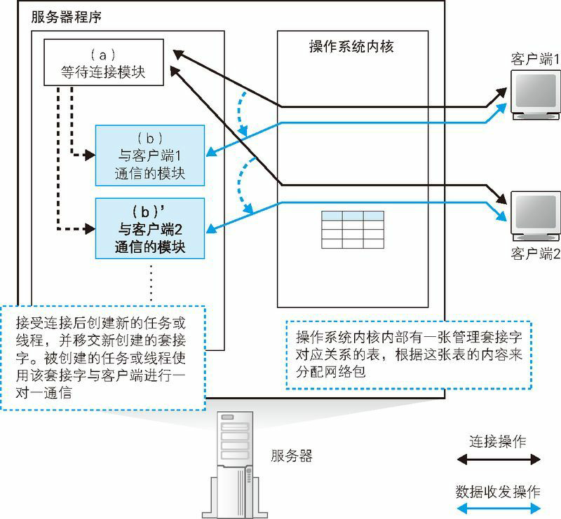
图1 用不同的模块与每个客户端进行通信
每次有新的客户端发起连接，都会启动一个新的客户端通信模块（b），因此（b）与客户端是一对一的关系。这样，（b）在工作时就不必考虑其他客户端的连接情况，只要关心自己对应的客户端就可以了。通过这样的方式，可以降低程序编写的难度。服务器操作系统具有多任务、多线程功能，可以同时运行多个程序，服务器程序的设计正是利用了这一功能。
多任务：操作系统提供的一种功能，可以让多个任务（程序）同时运行。实际上，一个处理器在某一个瞬间只能运行一个任务，但通过短时间内在不同的任务间切换，看起来就好像是同时运行多个任务一样（客户端操作系统也具有多任务和多线程功能）。有些操作系统称之为“多进程”。
多任务和多线程的区别在于任务和线程的区别。在操作系统内部，任务是作为单独的程序来对待的，而线程则是一个程序中的一部分。
当然，这种方法在每次客户端发起连接时都需要启动新的程序，这个过程比较耗时，响应时间也会相应增加。因此，还有一种方法是事先启动几个客户端通信模块，当客户端发起连接时，从空闲的模块中挑选一个出来将套接字移交给它来处理。
服务器端的套接字和端口号
刚才我们介绍了服务器程序的大体结构，但如果不深入挖掘调用 Socket 库的具体过程，我们还是无法理解服务器是如何使用套接字来完成通信的。因此，下面就来看一看服务器程序是如何调用 Socket 库的。
首先，我们再来回忆一下客户端与服务器的区别。从数据收发的角度来看，区分“客户端”和“服务器”这两个固定的角色似乎不是一个好办法。现在大多数应用都是由客户端去访问服务器，但其实应用的形态不止这一种。为了能够支持各种形态的应用，最好是在数据收发层面不需要区分客户端和服务器，而是能够以左右对称的方式自由发送数据。TCP 也正是在这样的背景下设计出来的。
不过，这其中还是存在一个无法做到左右对称的部分，那就是连接操作。连接这个操作是在有一方等待连接的情况下，另一方才能发起连接，如果双方同时发起连接是不行的，因为在对方没有等待连接的状态下，无法单方面进行连接。因此，只有这个部分必须区分发起连接和等待连接这两个不同的角色。从数据收发的角度来看，这就是客户端与服务器的区别，也就是说，发起连接的一方是客户端，等待连接的一方是服务器。
这个区别体现在如何调用 Socket 库上。首先，客户端的数据收发需要经过下面 4 个阶段。
- （1）创建套接字（创建套接字阶段）
- （2）用管道连接服务器端的套接字（连接阶段）
- （3）收发数据（收发阶段）
- （4）断开管道并删除套接字（断开阶段）
相对地，服务器是将阶段（2）改成了等待连接，具体如下。
- （1）创建套接字（创建套接字阶段）
- （2-1）将套接字设置为等待连接状态（等待连接阶段）
- （2-2）接受连接（接受连接阶段）
- （3）收发数据（收发阶段）
- （4）断开管道并删除套接字（断开阶段）
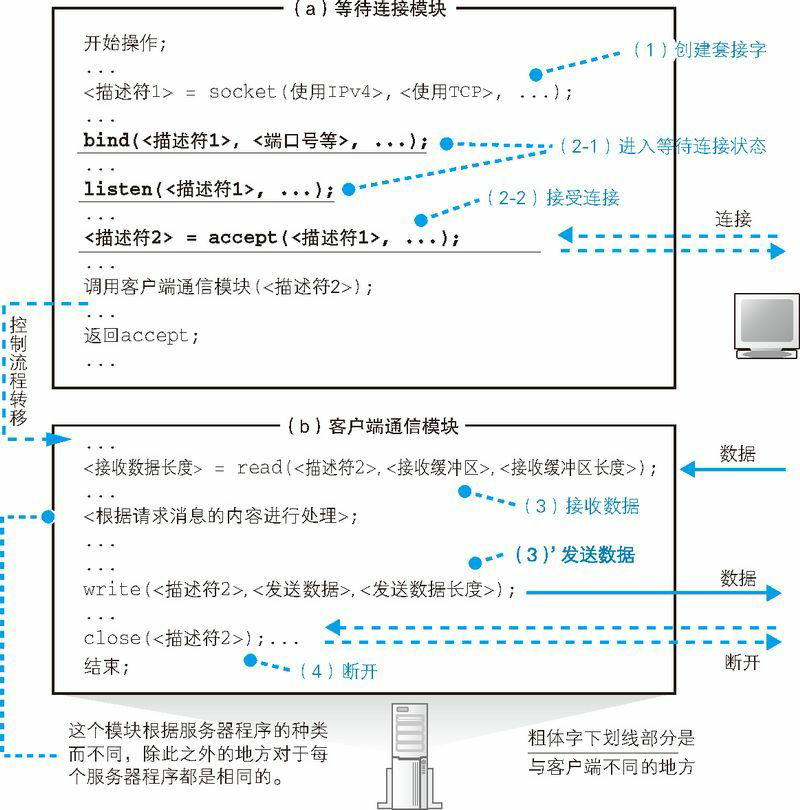
图2 服务器程序的通信操作
首先，协议栈调用 socket 创建套接字（图2（1）），这一步和客户端是相同的(创建套接字操作的本质是分配用于套接字的内存空间，这一点上客户端和服务器是一样的)。
接下来调用 bind 将端口号写入套接字中（图2（2-1））。在客户端发起连接的操作中，需要指定服务器端的端口号，这个端口号也就是在这一步设置的。具体的编号是根据服务器程序的种类，按照规则来确定的，例如 Web 服务器使用 80 号端口(Socket 库和协议栈其实并不受到这个规则的制约，它们只负责向套接字写入 bind 所指定的端口号，并等待来自该端口的连接。因此，我们也可以让 Web 服务器工作在 80 号之外的其他端口上。只不过，在这种情况下，客户端必须在 TCP 头部中指定这个端口号才能够完成连接)。
设置好端口号之后，协议栈会调用 listen 向套接字写入等待连接状态这一控制信息（图2（2-1））。这样一来，套接字就会开始等待来自客户端的连接网络包。
然后，协议栈会调用 accept 来接受连接（图2（2-2））。由于等待连接的模块在服务器程序启动时就已经在运行了，所以在刚启动时，应该还没有客户端的连接包到达。可是，包都没来就调用 accept 接受连接，可能大家会感到有点奇怪，不过没关系，因为如果包没有到达，就会转为等待包到达的状态，并在包到达的时候继续执行接受连接操作。因此，在执行 accept 的时候，一般来说服务器端都是处于等待包到达的状态，这时应用程序会暂停运行。在这个状态下，一旦客户端的包到达，就会返回响应包并开始接受连接操作。接下来，协议栈会给等待连接的套接字复制一个副本，然后将连接对象等控制信息写入新的套接字中（图3）。刚才我们介绍了调用 accept 时的工作过程，到这里，我们就创建了一个新的套接字，并和客户端套接字连接在一起了。
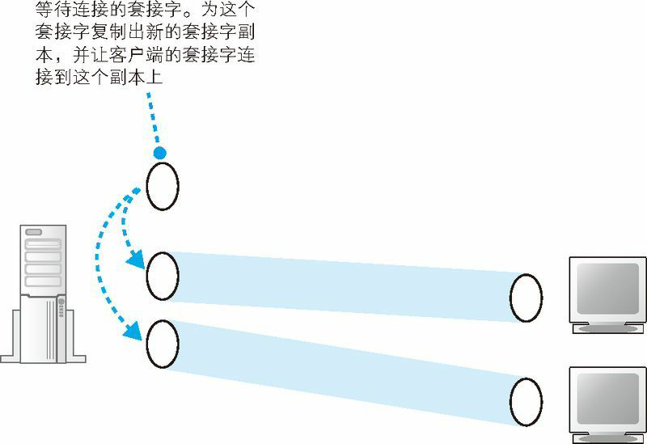
图3 服务器端的套接字
当 accept 结束之后，等待连接的过程也就结束了，这时等待连接模块会启动客户端通信模块，然后将连接好的新套接字转交给客户端通信模块，由这个模块来负责执行与客户端之间的通信操作。之后的数据收发操作和刚才说的一样，与客户端的工作过程是相同的。
其实在这一系列操作中，还有一部分没有讲到，那就是在复制出一个新的套接字之后，原来那个处于等待连接状态的套接字会怎么样呢？其实它还会以等待连接的状态继续存在，当再次调用 accept，客户端连接包到达时，它又可以再次执行接受连接操作。接受新的连接之后，和刚才一样，协议栈会为这个等待连接的套接字复制一个新的副本，然后让客户端连接到这个新的副本套接字上。像这样每次为新的连接创建新的套接字就是这一步操作的一个关键点。如果不创建新副本，而是直接让客户端连接到等待连接的套接字上，那么就没有套接字在等待连接了，这时如果有其他客户端发起连接就会遇到问题。为了避免出现这样的情况，协议栈采用了这种创建套接字的新副本，并让客户端连接到这个新副本上的方法。
此外，创建新套接字时端口号也是一个关键点。端口号是用来识别套接字的，因此我们以前说不同的套接字应该对应不同的端口号，但如果这样做，这里就会出现问题。因为在接受连接的时候，新创建的套接字副本就必须和原来的等待连接的套接字具有不同的端口号才行。这样一来，比如客户端本来想要连接 80 端口上的套接字，结果从另一个端口号返回了包，这样一来客户端就无法判断这个包到底是要连接的那个对象返回的，还是其他程序返回的。因此，新创建的套接字副本必须和原来的等待连接的套接字具有相同的端口号。
但是这样一来又会引发另一个问题。端口号是用来识别套接字的，如果一个端口号对应多个套接字，就无法通过端口号来定位到某一个套接字了。当客户端的包到达时，如果协议栈只看 TCP 头部中的接收方端口号，是无法判断这个包到底应该交给哪个套接字的。
这个问题可以用下面的方法来解决，即要确定某个套接字时，不仅使用服务器端套接字对应的端口号，还同时使用客户端的端口号再加上 IP 地址，总共使用下面 4 种信息来进行判断（图4）。
- 客户端 IP 地址
- 客户端端口号
- 服务器 IP 地址
- 服务器端口号
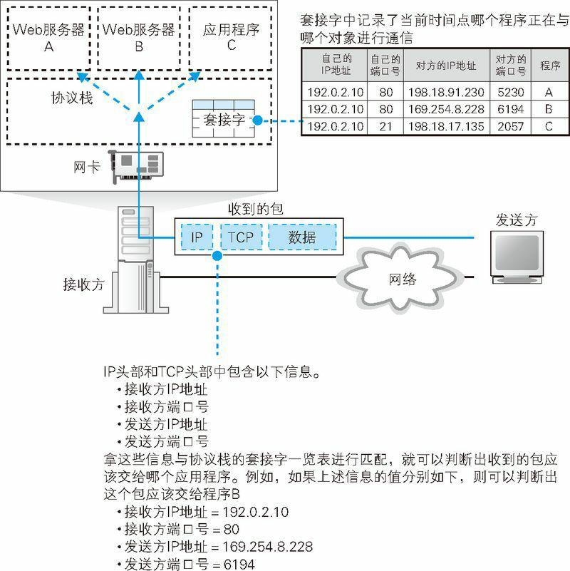
图4 分配接收到的包
服务器上可能存在多个端口号相同的套接字，但客户端的套接字都是对应不同端口号的，因此我们可以通过客户端的端口号来确定服务器上的某个套接字。不过，使用不同端口号的规则仅限一台客户端的内部，当有多个客户端进行连接时，它们之间的端口号是可以重复的。因此，我们还必须加上客户端的 IP 地址才能进行判断。例如，IP 地址为 198.18.203.154 的客户端的 1025 端口，就和 IP 地址为 198.18.142.86 的客户端的 1025 端口对应不同的套接字。
说句题外话，既然通过客户端 IP 地址、客户端端口号、服务器 IP 地址、服务器端口号这 4 种信息可以确定某个套接字，那么要指代某个套接字时用这 4 种信息就好了，为什么还要使用描述符呢？这个问题很好，不过我们无法用上面 4 种信息来代替描述符。原因是，在套接字刚刚创建好，还没有建立连接的状态下，这 4 种信息是不全的。此外，为了指代一个套接字，使用一种信息（描述符）比使用 4 种信息要简单。出于上面两个原因，应用程序和协议栈之间是使用描述符来指代套接字的。
使用描述符来指代套接字的原因如下。
- （1）等待连接的套接字中没有客户端 IP 地址和端口号
- （2）使用描述符比较简单
服务器的接收操作
网卡将接收到的信号转换成数字信息
到达服务器的网络包其本质是电信号或者光信号，接收信号的过程和客户端是一样的。
接收操作的第一步是网卡接收到信号，然后将其还原成数字信息。局域网中传输的网络包信号是由 1 和 0 组成的数字信息与用来同步的时钟信号叠加而成的，因此只要从中分离出时钟信号，然后根据时钟信号进行同步，就可以读取并还原出 1 和 0 的数字信息了。
信号的格式随传输速率的不同而不同，因此某些操作过程可能存在细微差异，例如 10BASE-T 的工作方式如图5 所示。首先从报头部分提取出时钟信号（图5 ①），报头的信号是按一定频率变化的，只要测定这个变化的频率就可以和时钟信号同步了。接下来，按照相同的周期延长时钟信号（图5 ②），并在每个时钟周期位置检测信号的变化方向（图5 ③）。图中用向上和向下的箭头表示变化方向，实际的信号则是正或负的电压，这里需要检测电压是从正变为负，还是从负变为正，这两种变化方向分别对应 0 和 1（图5 ④）。在图中，向上的箭头为 1，向下的箭头为 0，实际上是从负到正变化为 1，从正到负变化为 0。这样，信号就被还原成数字信息了（图6）。
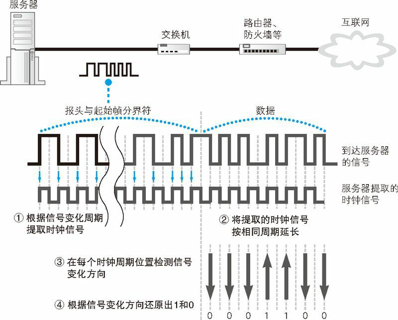
图5 服务器将接收到的电信号还原为数字信息
服务器接收电信号的过程和客户端发送的过程相反，是从模拟信息转换为数字信息。
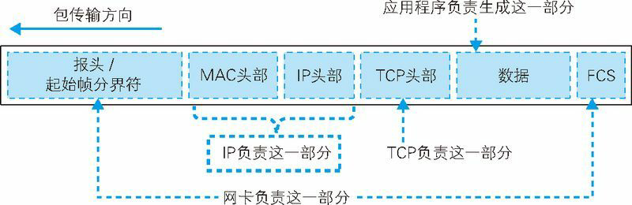
图6 根据信号还原的数字信息
接下来需要根据包末尾的帧校验序列（FCS）来校验错误，即根据校验公式(以太网中使用 CRC-32 方式来计算)计算刚刚接收到的数字信息，然后与包末尾的 FCS 值进行比较。 FCS 值是在发送时根据转换成电信号之前的数字信息进行计算得到的，因此如果根据信号还原出的数字信息与发送前的信息一致，则计算出的 FCS 也应该与包末尾的 FCS 一致。如果两者不一致，则可能是因为噪声等影响导致信号失真，数据产生了错误，这时接收的包是无效的，因此需要丢弃(包的丢失会由 TCP 检测出来并重传，因此错误的包可以直接丢弃)。
当 FCS 一致，即确认数据没有错误时，接下来需要检查 MAC 头部中的接收方 MAC 地址，看看这个包是不是发给自己的。以太网的基本工作方式是将数据广播到整个网络上，只有指定的接收者才接收数据，因此网络中还有很多发给其他设备的数据在传输，如果包的接收者不是自己，那么就需要丢弃这个包。
到这里，接收信号并还原成数字信息的操作就完成了，还原后的数字信息被保存在网卡内部的缓冲区中。上面这些操作都是由网卡的 MAC 模块来完成的。
网卡的 MAC 模块将网络包从信号还原为数字信息，校验 FCS 并存入缓冲区。
在这个过程中，服务器的 CPU 并不是一直在监控网络包的到达，而是在执行其他的任务，因此 CPU 并不知道此时网络包已经到达了。但接下来的接收操作需要 CPU 来参与，因此网卡需要通过中断将网络包到达的事件通知给 CPU。
接下来，CPU 就会暂停当前的工作，并切换到网卡的任务。然后，网卡驱动会开始运行，从网卡缓冲区中将接收到的包读取出来，根据 MAC 头部的以太类型字段判断协议的种类，并调用负责处理该协议的软件。这里，以太类型的值应该是表示 IP 协议，因此会调用 TCP/IP 协议栈，并将包转交给它。
实际的工作过程因操作系统的不同而不同，大多数情况下，网卡驱动并不会直接调用协议栈，而是先切换回操作系统，然后再由操作系统去调用协议栈，由协议栈继续执行接收操作。
网卡驱动会根据 MAC 头部判断协议类型，并将包交给相应的协议栈。
IP 模块的接收操作
当网络包转交到协议栈时，IP 模块会首先开始工作，检查 IP 头部。IP 模块首先会检查 IP 头部的格式是否符合规范，然后检查接收方 IP 地址，看包是不是发给自己的。当服务器启用类似路由器的包转发功能时（服务器操作系统中内置了可实现路由器功能的软件，只要启用这一功能，服务器就可以像路由器一样工作），对于不是发给自己的包，会像路由器一样根据路由表对包进行转发（服务器也可以启用类似防火墙的包过滤功能，这时，在包转发的过程中还会对包进行检查，并丢弃不符合规则的包）。
确认包是发给自己的之后，接下来需要检查包有没有被分片。检查 IP 头部的内容就可以知道是否分片，如果是分片的包，则将包暂时存放在内存中，等所有分片全部到达之后将分片组装起来还原成原始包；如果没有分片，则直接保留接收时的样子，不需要进行重组。到这里，我们就完成了包的接收。
接下来需要检查 IP 头部的协议号字段，并将包转交给相应的模块。例如，如果协议号为 06（十六进制），则将包转交给 TCP 模块；如果是 11（十六进制），则转交给 UDP 模块。这里我们假设这个包被交给 TCP 模块处理，然后继续往下看。
协议栈的 IP 模块会检查 IP 头部：
- （1） 判断是不是发给自己的；
- （2） 判断网络包是否经过分片；
- （3） 将包转交给TCP 模块或UDP模块。
TCP 模块如何处理连接包
前面的步骤对于任何包都是一样的，但后面的 TCP 模块的操作则根据包的内容有所区别。首先，我们来看一下发起连接的包是如何处理的。
当 TCP 头部中的控制位 SYN 为 1 时，表示这是一个发起连接的包（图7 ①）。这时，TCP 模块会执行接受连接的操作，不过在此之前，需要先检查包的接收方端口号，并检查在该端口上有没有与接收方端口号相同且正在处于等待连接状态的套接字。如果指定端口号没有等待连接的套接字，则向客户端返回错误通知的包（向客户端返回一个表示接收方端口不存在等待连接的套接字的 ICMP 消息）。
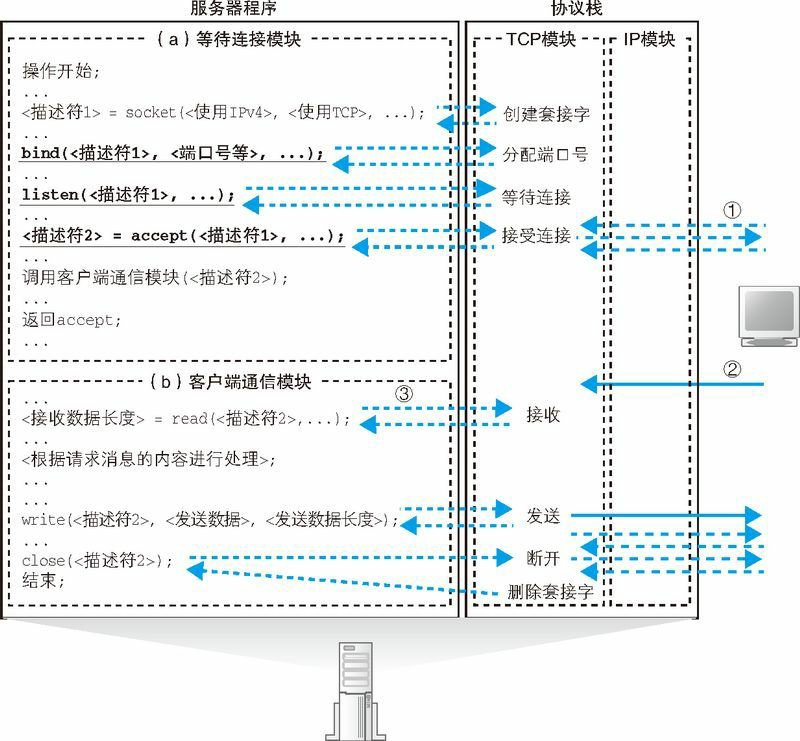
图7 服务器的工作过程
如果存在等待连接的套接字，则为这个套接字复制一个新的副本，并将发送方 IP 地址、端口号、序号初始值、窗口大小等必要的参数写入这个套接字中，同时分配用于发送缓冲区和接收缓冲区的内存空间。然后生成代表接收确认的 ACK 号，用于从服务器向客户端发送数据的序号初始值，表示接收缓冲区剩余容量的窗口大小，并用这些信息生成 TCP 头部，委托 IP 模块发送给客户端(这个包只有 TCP 头部，没有数据)。
这个包到达客户端之后，客户端会返回表示接收确认的 ACK 号，当这个 ACK 号返回服务器后，连接操作就完成了。
这时，服务器端的程序应该进入调用 accept 的暂停状态，当将新套接字的描述符转交给服务器程序之后，服务器程序就会恢复运行。
如果收到的是发起连接的包，则 TCP 模块会
- （1） 确认 TCP 头部的控制位SYN；
- （2） 检查接收方端口号；
- （3） 为相应的等待连接套接字复制一个新的副本；
- （4） 记录发送方 IP 地址和端口号等信息。
TCP 模块如何处理数据包
接下来我们来看看进入数据收发阶段之后，当数据包(假设包中的数据为 HTTP 请求消息)到达时 TCP 模块是如何处理的（图7 ②）。
首先，TCP 模块会检查收到的包对应哪一个套接字。在服务器端，可能有多个已连接的套接字对应同一个端口号，因此仅根据接收方端口号无法找到特定的套接字。这时我们需要根据 IP 头部中的发送方 IP 地址和接收方 IP 地址，以及 TCP 头部中的接收方端口号和发送方端口号共 4 种信息，找到上述 4 种信息全部匹配的套接字。
找到 4 种信息全部匹配的套接字之后，TCP 模块会对比该套接字中保存的数据收发状态和收到的包的 TCP 头部中的信息是否匹配，以确定数据收发操作是否正常。具体来说，就是根据套接字中保存的上一个序号和数据长度计算下一个序号，并检查与收到的包的 TCP 头部中的序号是否一致。如果两者一致，就说明包正常到达了服务器，没有丢失。这时，TCP 模块会从包中提出数据，并存放到接收缓冲区中，与上次收到的数据块连接起来。这样一来，数据就被还原成分包之前的状态了（拼合数据块的操作在每次收到数据包时都会进行，而不是等所有数据全部接受完毕之后再统一拼合的）。
当收到的数据进入接收缓冲区后，TCP 模块就会生成确认应答的 TCP 头部，并根据接收包的序号和数据长度计算出 ACK 号，然后委托 IP 模块发送给客户端（在返回 ACK 号之前，会先等待一段时间，看看能不能和后续的应答包合并）。
收到的数据块进入接收缓冲区，意味着数据包接收的操作告一段落了。接下来，应用程序会调用 Socket 库的 read（图7 ③）来获取收到的数据，这时数据会被转交给应用程序。如果应用程序不来获取数据，则数据会被一直保存在缓冲区中，但一般来说，应用程序会在数据到达之前调用 read 等待数据到达，在这种情况下，TCP 模块在完成接收操作的同时，就会执行将数据转交给应用程序的操作。
然后，控制流程会转移到服务器程序，对收到的数据进行处理，也就是检查 HTTP 请求消息的内容，并根据请求的内容向浏览器返回相应的数据。
收到数据包时，TCP 模块会
- （1） 根据收到的包的发送方 IP 地址、发送方端口号、接收方 IP 地址、接收方端口号找到相对应的套接字；
- （2） 将数据块拼合起来并保存在接收缓冲区中；
- （3） 向客户端返回ACK。
TCP 模块的断开操作
当数据收发完成后，便开始执行断开操作。这个过程和客户端是一样的。
在 TCP 协议的规则中，断开操作可以由客户端或服务器任何一方发起，具体的顺序是由应用层协议决定的。Web 中，这一顺序随 HTTP 协议版本不同而不同，在 HTTP1.0 中，是服务器先发起断开操作。
这时，服务器程序会调用 Socket 库的 close，TCP 模块会生成一个控制位 FIN 为 1 的 TCP 头部，并委托 IP 模块发送给客户端。当客户端收到这个包之后，会返回一个 ACK 号。接下来客户端调用 close，生成一个 FIN 为 1 的 TCP 头部发给服务器，服务器再返回 ACK 号，这时断开操作就完成了。HTTP1.1 中，是客户端先发起断开操作，这种情况下只要将客户端和服务器的操作颠倒一下就可以了。
无论哪种情况，当断开操作完成后，套接字会在经过一段时间后被删除。
Web 服务器程序解释请求消息并作出响应
将请求的 URI 转换为实际的文件名
图7 展示了服务器程序的工作过程，这个过程不仅限于 Web 服务器，对于各种服务器程序都是共通的，收发数据的过程也是大同小异的。各种服务器程序的不同点在于图中（b）客户端通信部分的第一行调用 read 后面的如下部分。
< 根据请求消息的内容进行处理 >;
图7 中只写了一行，但实际上这里应该是一组处理各种工作的程序，或者说这里才是服务器程序的核心部分。
Web 服务器中，图7 的 read 获取的数据内容就是 HTTP 请求消息。服务器程序会根据收到的请求消息中的内容进行相应的处理，并生成响应消息，再通过 write 返回给客户端。请求消息包括一个称为“方法”的命令，以及表示数据源的 URI（文件路径名），服务器程序会根据这些内容向客户端返回数据，但对于不同的方法和 URI，服务器内部的工作过程会有所不同。
最简单的一种情况如图8 中的例子所示，请求方法为 GET，URI 为一个 HTML 文件名。这种情况只要从文件中读出 HTML 文档，然后将其作为响应消息返回就可以了。不过，按照 URI 从磁盘上读取文件并没有这么简单。如果完全按照 URI 中的路径和文件名读取，那就意味着磁盘上所有的文件都可以访问，Web 服务器的磁盘内容就全部暴露了，这很危险。因此，这里需要一些特殊的机制。
对于 UNIX 系操作系统的服务器来说，URI 的路径名和磁盘文件的路径名格式是相同的，对于 Windows 也只要将“/”替换成“\”就可以了，因此我们可以将 URI 当作是磁盘文件的路径名
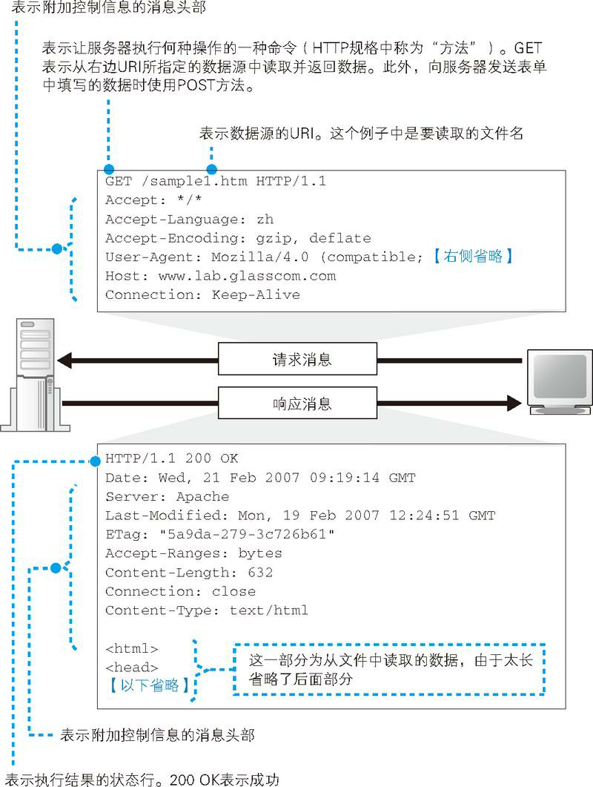
图8 Web 的基本工作方式
Web 服务器公开的目录其实并不是磁盘上的实际目录，而是如图9 这样的虚拟目录，而 URI 中写的就是在这个虚拟目录结构下的路径名。因此，当读取文件时，需要先查询虚拟目录与实际目录的对应关系，并将 URI 转换成实际的文件名后，才能读取文件并返回数据。举个例子，假设我们的虚拟目录结构如图9 所示，如果请求消息中的 URI 如下页（1）所示，那么因为 /~user2/…对应的实际目录为 /home/user2/…，所以将 URI 转换成实际文件名后应该是如下页（2）。
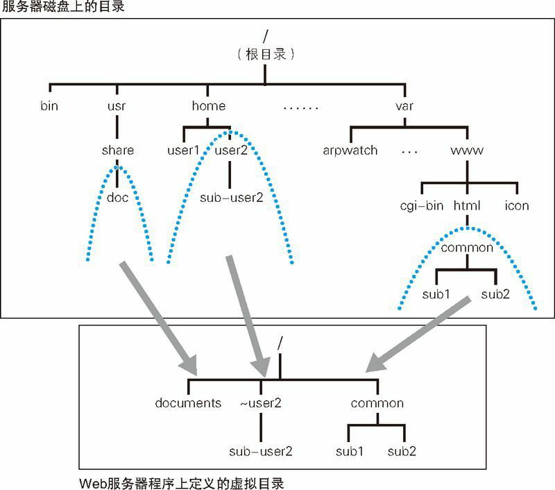
图9 客户端看到的目录结构和实际目录结构是不同的
客户端看到的 Web 服务器目录是虚拟的，和实际的目录结构不同。Web 服务器内部会将实际的目录名和供外部访问的虚拟目录名进行关联。1
2
3/~user2/sub-user2/sample.html (1)
/home/user2/sub-user2/sample.html (2)
于是，服务器就会根据上述路径从磁盘中读取相应的文件，然后将数据返回给客户端。
文件名转换是有特例的，比如 URI 中的路径省略了文件名的情况，这时服务器会读取事先设置好的默认文件名。例如在浏览器中输入如下网址。
http://www.glasscom.com/tone/
上面这个网址省略了文件名，服务器会在末尾添加默认文件名，如下。
http://www.glasscom.com/tone/index.html
在这个例子中，index.html 这个文件名是在服务器中设置好的，服务器会将它添加在目录名的后面。这个文件名是在 Web 服务器配置文件中设置的。尽管这个文件名可以任意设置，但一般来说会设置成类似 index.html、index.cgi、default.htm 等这样的文件名。
有些 Web 服务器程序还具有文件名改写功能，只要设置好改写的规则，当 URI 中的路径符合改写规则时，就可以将 URI 中的文件名改写成其他的文件名进行访问(例如 Web 服务器程序 Apache 就具有这样的功能)。当出于某些原因 Web 服务器的目录和文件名发生变化，但又希望用户通过原来的网址进行访问的时候，这个功能非常有用。
运行 CGI 程序
如果 URI 指定的文件内容为 HTML 文档或图片，那么只要直接将文件内容作为响应消息返回客户端就可以了。但 URI 指定的文件内容不仅限于 HTML 文档，也有可能是一个程序。在这个情况下，服务器不会直接返回文件内容，而是会运行这个程序，然后将程序输出的数据返回给客户端。Web 服务器可以启动的程序有几种类型，每种类型的具体工作方式有所区别，下面我们来看看 CGI 程序是如何工作的。
当需要 Web 服务器运行程序时，浏览器发送的 HTTP 请求消息内容会和访问 HTML 文档时不太一样，我们先从这里开始讲。Web 服务器运行程序时，一般来说浏览器会将需要程序处理的数据放在 HTTP 请求消息中发送给服务器。这些数据有很多种类，例如购物网站订单表中的品名、数量、发货地址等，搜索引擎中输入的关键字也是一个常见的例子。
总之，浏览器需要在发送给 Web 服务器的请求消息中加入一些数据。有两种加入数据的方法。一种是在 HTML 文档的表单中加上 method=”GET”，通过 HTTP 的 GET 方法，将输入的数据作为参数添加在 URI 后面发送给服务器。另一种方法是在 HTML 文档的表单中加上 method=”POST”，将数据放在 HTTP 请求消息的消息体(即头部字段之后的部分)中发送给服务器（图10）。
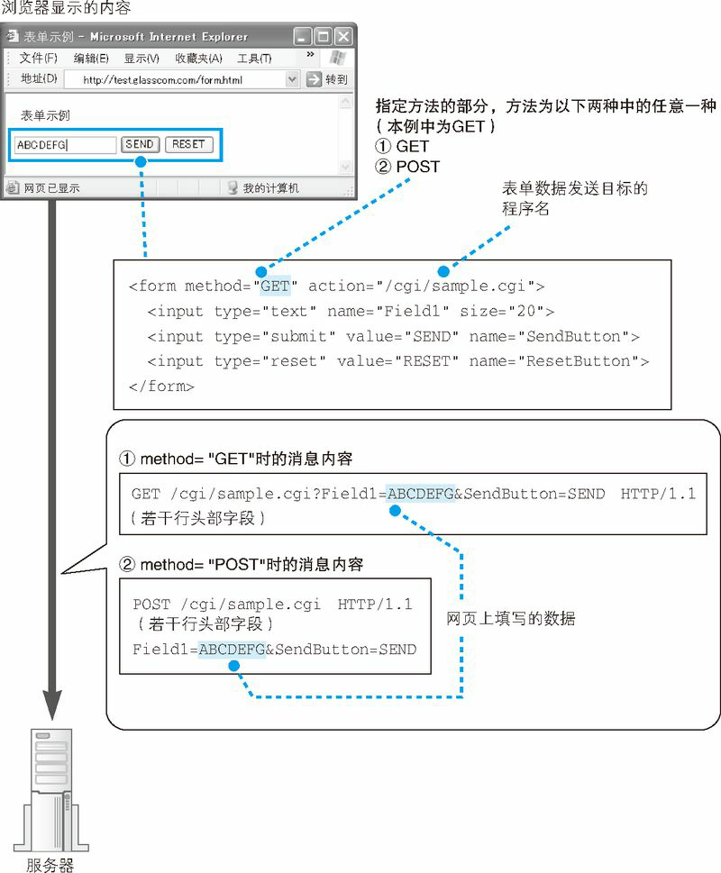
图10 用HTTP 请求发送表单中输入的内容
收到请求消息之后，Web 服务器会进行下面的工作。首先，Web 服务器会检查 URI 指定的文件名，看一看这个文件是不是一个程序。这里的判断方法是在 Web 服务器中事先设置好的，一般是通过文件的扩展名来进行判断，例如将 .cgi、.php 等扩展名的文件设置为程序，当遇到这些文件时，Web 服务器就会将它们作为程序来对待。也可以设置一个存放程序的目录，将这个目录下的所有文件都作为程序来对待。此外，还可以根据文件的属性来进行判断。
如果判断要访问的文件为程序文件，Web 服务器会委托操作系统运行这个程序，然后从请求消息中取出数据并交给运行的程序(除了数据，还可以将请求消息的头部字段传递给程序)。如果方法为 GET，则将 URI 后面的参数传递给程序；如果方法为 POST，则将消息体中的数据传递给程序（图11）。
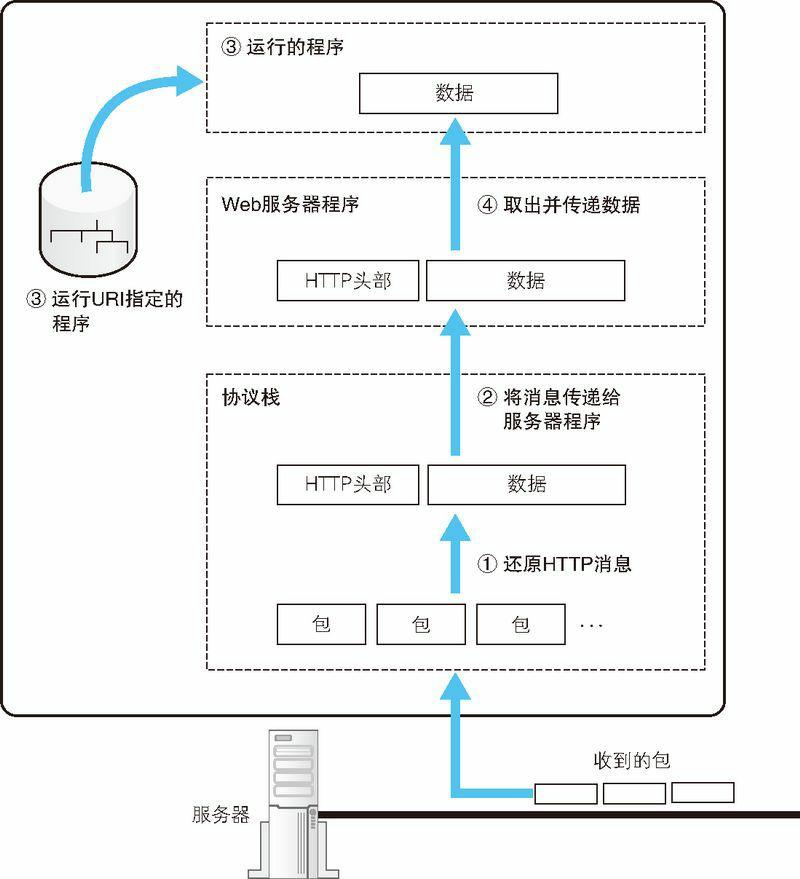
图11 数据如何传递给 Web 服务器上运行的程序
Web 服务器程序在组装网络包、还原数据之后，会运行其中指定的程序（实际是委托操作系统来运行），然后将数据传递给已运行的程序。
接下来，运行的程序收到数据后会进行一系列处理，并将输出的数据返回给 Web 服务器。程序可以返回各种内容，如表示订单已接受的说明，或者按照关键字从数据库中搜索出的结果等。无论如何，为了将数据处理的结果返回给客户端，首先需要将它返回给 Web 服务器。这些输出的数据一般来说会嵌入到 HTML 文档中，因此 Web 服务器可以直接将其作为响应消息返回给客户端。输出数据的内容是由运行的程序生成的，Web 服务器并不过问，也不会去改变程序输出的内容(但可以添加一些 HTTP 消息的头部字段)。
Web 服务器的访问控制
正如我们前面讲的，Web 服务器的基本工作方式就是根据请求消息的内容判断数据源，并从中获取数据返回给客户端，不过在执行这些操作之前，Web 服务器还可以检查事先设置的一些规则，并根据规则允许或禁止访问。这种根据规则判断是否允许访问的功能称为访问控制，一些会员制的信息服务需要限制用户权限的时候会使用这一功能，公司里也可以利用访问控制只允许某些特定部门访问。
Web 服务器的访问控制规则主要有以下 3 种。
- （1）客户端 IP 地址
- （2）客户端域名
- （3）用户名和密码
以上规则可针对作为数据源的文件和目录进行设置，当收到客户端的请求消息时，服务器会根据 URI 判断数据源，并检查数据源对应的访问控制规则，只有允许访问时才读取文件或运行程序。下面我们来看一下设定访问控制规则时，服务器是如何工作的。
首先是根据客户端 IP 地址设置的规则，这个情况很简单，在调用 accept 接受连接时，就已经知道客户端的 IP 地址了，只要检查其是否允许访问就可以了。
当根据客户端域名设置规则时，需要先根据客户端 IP 地址查询客户端域名，这需要使用 DNS 服务器。一般我们使用 DNS 服务器都是根据域名查询 IP 地址，其实根据 IP 地址反查域名也可以使用 DNS 服务器。具体来说，这个过程是这样的。收到客户端的请求消息后，Web 服务器（图12 ①）会委托协议栈告知包的发送方 IP 地址，然后用这个 IP 地址生成查询消息并发送给最近的 DNS 服务器（图12 ②）。接下来，DNS 服务器找出负责管辖该 IP 地址的 DNS 服务器，并将查询转发给它（图12 ③），查询到相应的域名之后返回结果（图12 ④），然后 Web 服务器端的 DNS 服务器再将结果转发给 Web 服务器（图12 ⑤）。这样一来，我们就可以根据发送方 IP 地址查询到域名。接下来，为了保险起见，还需要用这个域名查询一下 IP 地址，看看结果与发送方 IP 地址是否一致（图12 ⑥）。这是因为有一种在 DNS 服务器上注册假域名的攻击方式，因此我们需要进行双重检查，如果两者一致则检查相应的访问控制规则，判断是否允许访问。从图12 中可以看出，这种方式需要和 DNS 服务器进行多次查询，整个过程比较耗时，因此 Web 服务器的响应速度也会变慢。
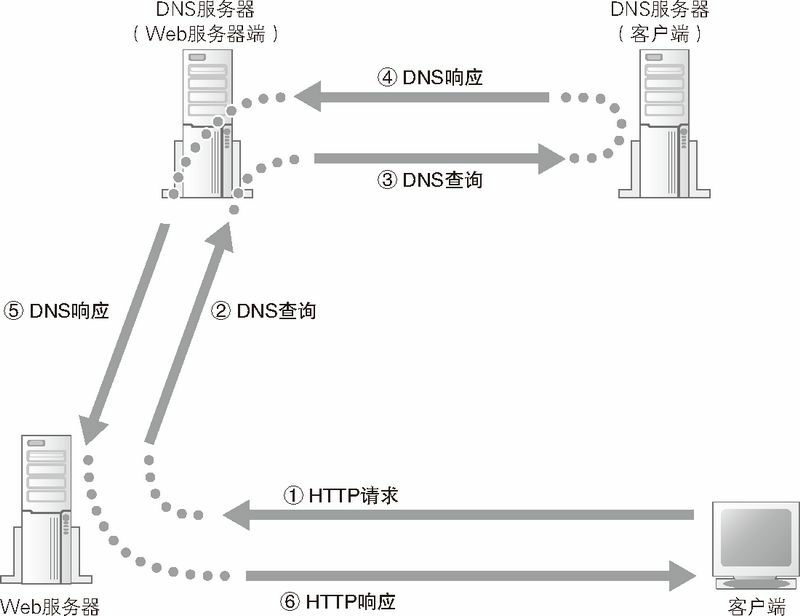
图12 根据域名进行访问控制
如果用户名和密码已设置好，那么情况如图13。通常的请求消息中不包含用户名和密码，因此无法验证用户名和密码（图13 ①）。因此，Web 服务器会向用户发送一条响应消息，告诉用户需要在请求消息中放入用户名和密码（图13 ②）。浏览器收到这条响应消息后，会弹出一个输入用户名和密码的窗口，用户输入用户名和密码后（图13 ③），浏览器将这些信息放入请求消息中重新发送给服务器（图13 ④）。然后，Web 服务器查看接收到的用户名和密码与事先设置好的用户名和密码是否一致，以此判断是否允许访问，如果允许访问，则返回数据（图13 ⑤）。
这里介绍的内容是使用 Web 服务器提供的密码认证功能时的工作过程，除此之外，还可以通过 Web 服务器运行 CGI 认证程序来验证密码。这种情况下，认证程序会生成一个含有密码表单的网页并发送给用户，用户填写密码后发送回服务器，由认证程序进行校验。这种方式会包含密码表单页面和用户提交的密码数据的交互过程，因此和图13 的过程是有区别的。
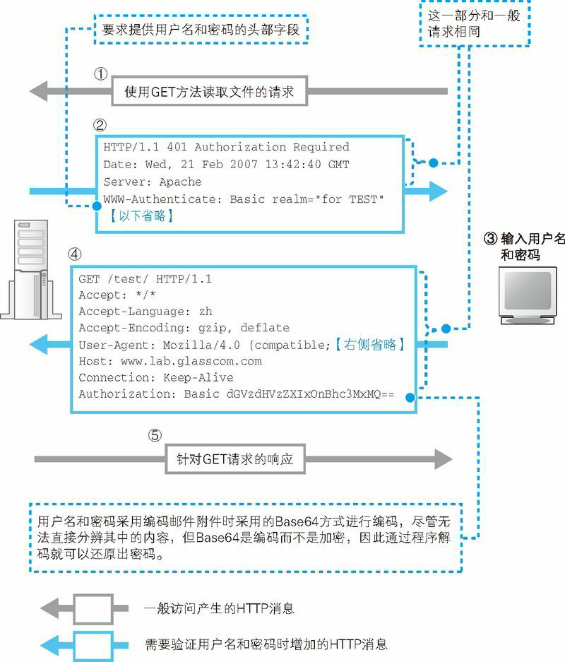
图13 利用 HTTP 验证用户名和密码
当访问设置了用户名和密码保护的页面时，需要在 HTTP 请求消息中添加包含用户名和密码的头部字段（Authorization）。否则，Web 服务器不会返回请求的页面内容，而是会返回一个要求提供用户名和密码的头部字段（WWW-Authenticate）消息。
返回响应消息
当服务器完成对请求消息的各种处理之后，就可以返回响应消息了。这里的工作过程和客户端向服务器发送请求消息时的过程相同。
首先，Web 服务器调用 Socket 库的 write，将响应消息交给协议栈。这时，需要告诉协议栈这个响应消息应该发给谁，但我们并不需要直接告知客户端的 IP 地址等信息，而是只需要给出表示通信使用的套接字的描述符就可以了。套接字中保存了所有的通信状态，其中也包括通信对象的信息，因此只要有描述符就万事大吉了。
接下来，协议栈会将数据拆分成多个网络包，然后加上头部发送出去。这些包中包含接收方客户端的地址，它们将经过交换机和路由器的转发，通过互联网最终到达客户端。
浏览器接收响应消息并显示内容
通过响应的数据类型判断其中的内容
Web 服务器发送的响应消息会被分成多个包发送给客户端，然后客户端需要接收数据。首先，网卡将信号还原成数字信息，协议栈将拆分的网络包组装起来并取出响应消息，然后将消息转交给浏览器。这个过程和服务器的接收操作相同。
要显示内容，首先需要判断响应消息中的数据属于哪种类型。Web 可以处理的数据包括文字、图像、声音、视频等多种类型，每种数据的显示方法都不同，因此必须先要知道返回了什么类型的数据，否则无法正确显示。
这时，我们需要一些信息才能判断数据类型，原则上可以根据响应消息开头的 Content-Type 头部字段的值来进行判断。这个值一般是下面这样的字符串。Content-Type: text/html
其中“/”左边的部分称为“主类型”，表示数据的大分类；右边的“子类型”表示具体的数据类型。在上面的例子中，主类型是 text，子类型是 html。主类型和子类型的含义都是事先确定好的（类型的含义和公有 IP 地址、端口号一样，都是全世界统一管理的）。
此外，当数据类型为文本时，还需要判断编码方式，这时需要用 charset 附加表示文本编码方式的信息，内容如下。Content-Type: text/html; charset=utf-8
除了通过 Content-Type 判断数据类型，还需要检查 Content-Encoding 头部字段。如果消息中存放的内容是通过压缩或编码技术对原始数据进行转换得到的，那么 Content-Encoding 的值就表示具体的转换方式，通过这个字段的值，我们可以知道如何将消息中经过转换的数据还原成原始数据。
Content-Type 字段使用的表示数据类型的方法是在 MIME 规格中定义的，这个规格不仅用于 Web，也是邮件等领域中普遍使用的一种方式。不过这种方式也只不过是一种原则性的规范，要通过 Content-Type 准确判断数据类型，就需要保证 Web 服务器正确设置 Content-Type 的值，但现实中并非总是如此。如果 Web 服务器管理员不当心，就可能会因为设置错误导致 Content-Type 的值不正确。因此，根据原则检查 Content-Type 并不能确保总是能够准确判断数据类型。
MIME：Multipurpose Internet Mail Extensions，多用途因特网邮件扩充。原本是为在电子邮件中附加图片和附件等非文本信息而制定的一种规格，后来在 Web 的领域也得到了广泛使用。
因此，有时候我们需要结合其他一些信息来综合判断数据类型，例如请求文件的扩展名、数据内容的格式等。比如，我们可以检查文件的扩展名，如果为 .html 或 .htm 则看作是 HTML 文件，或者也可以检查数据的内容，如果是以 <html> 开头的则看作是 HTML 文档。不仅是 HTML 这样的文本文件，图片也是一样。图片是经过压缩的二进制数据，但其开头也有表示内容格式的信息，我们可以根据这些信息来判断数据的类型。不过，这部分的逻辑并没有一个统一的规格，因此不同的浏览器以及不同的版本都会有所差异。
浏览器显示网页内容！访问完成！
判断完数据类型，我们离终点就只有一步之遥了。接下来只要根据数据类型调用用于显示内容的程序，将数据显示出来就可以了。对于 HTML 文档、纯文本、图片这些基本数据类型，浏览器自身具有显示这些内容的功能，因此由浏览器自身负责显示。
不同类型的数据显示操作的过程也不一样，我们以 HTML 文档为例来介绍。HTML 文档通过标签表示文档的布局和字体等样式信息，浏览器需要解释这些标签的含义，按照指定的样式显示文档的内容。实际的显示操作是由操作系统来完成的，浏览器负责对操作系统发出指令，例如在屏幕上的什么位置显示什么文字、使用什么样的字体等。
网页中还可以嵌入图片等数据，HTML 文档和图片等数据是分别存在在不同的文件中的，HTML 文档中只有表示图片引用的标签 （扩展名为 .html 或 .htm 的文件中只包含 HTML 文档的数据）。在读取文档数据时，一旦遇到相应的标签，浏览器就会向服务器请求其中的图片文件。这个请求过程和请求 HTML 文档的过程是一样的，就是在 HTTP 请求消息的 URI 中写上图片文件的文件名即可。将这个请求消息发送给 Web 服务器之后，Web 服务器就会返回图片数据了。接下来，浏览器会将图片嵌入到标签所在的位置。JPEG 和 GIF 格式的图片是经过压缩的，浏览器需要将其解压后委托操作系统进行显示。当然，为了避免图片和文字重叠，在显示文字的时候需要为图片留出相应的位置。
像 HTML 文档和图片等浏览器可自行显示的数据，就会按照上述方式委托浏览器在屏幕上显示出来。不过，Web 服务器可能还会返回其他一些类型的数据，如文字处理、幻灯片等应用程序的数据。这些数据无法由浏览器自行显示，这时浏览器会调用相应的程序。这些程序可以是浏览器的插件，也可以是独立的程序，无论如何，不同类型的数据对应不同的程序，这一对应关系是在浏览器中设置好的，只要按照这一对应关系调用相应的程序，并将数据传递给它就可以了。然后，被调用的程序会负责显示相应的内容。
到这里，浏览器的显示操作就完成了，可以等待用户的下一个动作了。当用户点击网页中的链接，或者在网址栏中输入新的网址时，访问 Web 服务器的操作就又开始了。
搬运自《网络是怎么链接的》